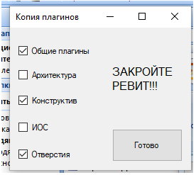
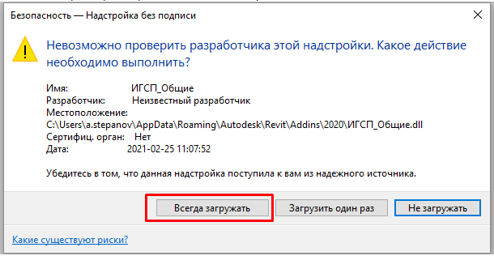

Инструкци по обновлению плагинов
Для работы в ПО Autodesk Revit зачастую будем использовать плагины, облегчающие рутинные операции.
Плагины можно поставить себе с помощью простой утилиты, располагающейся в директории
X:\Проект 18\Обмен\BIM\Ресурсы BIM\02_Autodesk_Revit\04_Настройки\Плагины\Копия плагинов.exe
Если у Вас открыт ревит, то закройте его, далее запустите утилиту по ссылке выше В открывшемся окне выберите «Общие плагины» , «Отверстия» и свой раздел по специальности
К примеру конструктора выберут следующее:
И нажмите «Готово»
После этого при открытии ревита нажмите кнопку
В процессе работы некоторые плагины будут дорабатываться или разрабатываться новые, чтобы обновить – необходимо будет провести процедуру, описанную выше заново.